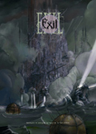

Forums galactiques > Assemblée Galactique : diplomatie officielle > Disparition
Pages : 1
| Vladimir Harkonnen Respect diplomatique : 2306  10/03 ETU 15:32  | Score : 7 Détails - Baron, cela fait deux jours que nous n'avons pas de nouvelles.
- De quoi ? - La IV° Flotte. - Et alors ? ** La scène se passe dans le palais royal de l'agréable planète de Poritrin, l'homme qui vient de s'adresser au baron est un nain en uniforme. Sur sa cape, le blason Harkonnen commence à être usé. ** - La I° et la II° flotte ont été mobilisées dans la Croisade Contre l'Illettrisme. Le reste de la III° est en stationnement chez Soilwork en attendant ses conditions de paix. La V° et la VI° sont sur le chemin du retour après les défaites dans la bataille des Araciens. Et les VII°, VIII°, IX° et X° flottes sont actuellement en train de protéger vos systèmes contre les invasions barbares. - Je le sais tout ça ! Et alors ? - Et alors, on ne sait pas où se trouve la IV° flotte. - Faites exécuter les responsables. - Mais... - Vous refusez ? Très bien. * un temps * Peter ? - Oui mon baron ? - Occupe toi personnellement des généraux responsables de la IV°. Et de ce nabot. - NON !! Laissez-moi ! Je vais m'occuper de les faire punir ! - Trop tard. ** Deux gardes saisissent le nain et quittent la salle, suivis de près par Peter, souriant comme rarement. Le baron reste seul, plongé dans ses pensées. ** La IV° flotte. Je l'avais envoyée en exploration. Il me semble même que lors du dernier rapport, elle était tombé sur des planètes et que des formes de vie intelligente y avaient été détectées. Mais la IV° était lourdement blindée. Un petit contingent, certes, mais tout de même. Serait-il possible que... Non, c'est impossible ! Je ne peux pas envisager cette hypothèse. Quoique... 48H sans contact... Je n'ose imaginer... Pourraient-ils être de retour ? | ||
| Amiral Tarkan Respect diplomatique : 319  10/03 ETU 18:54 | Score : 5 Détails Télétransmission code 4.254
A l'adresse du baron Harkonnen : "Dossier P7 2.21.11-Archive-Espace spatial d'Alexandria- Nos services de gestion de l'espace spatial nous ont signalé des échos radar aux environs d'un de notre système. Après demande d'identification nous avons reçu un message non identifié de la part d'une flotte localisée aux coordonnées 4.214.21. Nous avons perdu le contact radar avec cette "flotte fantome" après une nouvelle demande d'identification. " Cet incident a eut lieu hier aux alentours de 00h00 heure d'Alexandria. Nous tentons de retrouver cette flotte qui semble correspondre a la "IVe flotte". Nous vous communiquerons les nouvelles informations obtenues. Fin de la télétransmission code 4.254 | ||
| Vladimir Harkonnen Respect diplomatique : 2306 14/03 ETU 16:44 | Score : 11 Détails - Baron ! Baron ! La IV° Flotte ! Nous avons des nouvelles !
- Hum ? ** Le baron, confortablement installé au milieu de coussins est réveillé par cette intrusion brutale. L'homme qui vient de rentrer est général, cela se voit à la petite dague accrochée à sa ceinture. Le baron lui fait signe de commencer les explications d'un geste désinvolte de la main. ** - Une frégate vient de revenir. L'équipage est indemne, mais le vaisseau est... Enfin, on ne sait même pas comment il a pu revenir jusqu'ici... - Et alors ? - Et alors... Une attaque fulgurante. La flotte a été ionisée, atomisée... bref... Il n'en reste plus rien... Nous ne savons pas qui a tiré. L'équipage qui est rentré est sous le choc. Ils n'ont rien vu. Pas de flotte. Les radars ne signalaient rien... Et quand les premiers tirs sont arrivés, ils ont simplement aperçu quelques secondes des croiseurs lourds avant de pouvoir partir miraculeusement en hyperespace. - Et bien, à qui sont ses flottes ? Ils ont vu les vaisseaux !! - Je vous l'ai dit, ils ne savent pas ! Pas de blasons distinctifs, pas de marques particulières... Ce ne sont pas des articles de contrebande. .. Les guildéens n'y sont pour rien... Le Bene Tleilax non plus... ** Un silence pesant s'abat sur la pièce. Vladimir semble pensif. La colère se lit sur son visage. Le général face à lui commence à avoir peur. Cela se voit sur ses traits. Il comprend les pensées du baron... Il connait trop bien le baron... Peter n'étant pas là, ce serait rapide au moins... Mais il fallait bien que quelqu'un annonce la nouvelle. C'était tombé sur lui. ** - Gardes ! ** Deux gardes s'avancent. Le général les accompagne, sans opposer de résistance. Il les précèderait presque. Vladimir se retrouve à nouveau seul. Il appuie sur des commandes et un écran sort devant ses yeux. Il lit un rapport d'archive, probablement. Il est pensif. ** Cela ne correspond que trop bien... Voyons les élements que nous avons. Les vaisseaux sont d'un genre nouveau. Cela devait arriver un jour. Les Ixiens ont dû fabriquer des nouveaux modèles contre de l'argent. Contre toujours plus d'argent. Ces vaisseaux sont capables de lancer des bombardements hyperatomiques ciblés en un temps très court. Des bombardements ioniques tout aussi rapides. Et les flottes se déplacent plus vite que jamais. La bataille aura duré six heures, douze au maximum... De plus, l'Amiral Tarkan nous a signalé des perturbations magnétiques. Au moment qui correspondait aux attaques... Ce sont donc bien des attaques hyperatomiques massives... auquels les vaisseaux attaquants ont résisté de façon anormale. Qui aurait assez d'argent pour monter un tel coup ? Réflechissons en mentat... Ah si seulement Peter était là... Les Ixiens n'auraient jamais attaqué eux-même. Et ils nieront toute implication. Le Tleilax est ruiné. Les Atréides sont presque écrasés. Les Guildéens... Les Guildéens auraient suffisament d'argent ! Non. Ils n'ont aucun intérêt à détruire une galaxie, tout le commerce en souffrirai. Qui manque t'il ? Voyons voir dans les archives... Ah ! Le Bene Gesserit ! Non, le Bene Gesserit est trop occupé par son programme génétique. J'ai dû oublier d'autres factions. ** Après plus de huit heures de recherches dans les bases de données de la Maison Harkonnen, le baron prend une heure de repos avant de retourner consulter les archives. Après encore près de seize heures de recherches, il éteint son matériel. ** Je n'ai oublié personne, il faut se rendre à l'évidence. Il ne reste donc plus qu'Eux. | ||
| Vladimir Harkonnen Respect diplomatique : 2306 17/03 ETU 15:02 | Score : 7 Détails ** L'homme marche dans les recoins sombres du quartier ouest de la capitale. Après être passé devant l'assemblée, profitant d'une relève de la garde, il poursuit sa route vers le quartier des tavernes. Sa longue cape sombre le couvre des pieds à la tête. Tête qui est elle-même recouverte d'une capuche dissimulant complètement son visage. L'homme, que les ivrognes vautrés dans les caniveaux prennent pour une ombre, presse le pas.
Il s'arrète sous un porche quelques instants, immobile. Une patrouille de sécurité passe sa route sans le voir. Il reprend son chemin. Tournant à gauche dans telle ruelle, grimpant prestemment le mur d'un jardin pour se dissimuler quand un groupe de tocards bruyant approche. Tournant à droit pour gagner le quartier le plus mal famé, celui des pires tavernes. Du bordel d'Improved Carnage aux taudis où l'alcool frelaté, coupé avec des substances dont il vaut mieux ignorer l'origine, se vends à des prix dérisoires. Arrivé devant une toute petite taverne dont l'enseigne a été arrachée, il pousse la porte et entre. La fumée des pipes et les filles de joie divagant de table en table rendent difficile la localisation de son contact. Quand enfin il arrive à ses côtés, il lui lance d'une voie claire : ** - Le tabac est moins bon cette année. - Mais la récolte de l'an prochain promet. ** L'homme encapuchonné s'assoit alors posément, rassuré par la validation du code. L'autre en face, le visage au traits durs, buriné par le temps, avale doucement sa chope de Wiskey. Il ressemble aux corsaires de l'ancien temps. L'homme à la cape porte une main à sa poche. ** - J'ai ce que vous vouliez, lance d'une voix basse le pirate. - Vous trouverez l'argent dans cette mallette. ** La silhouette tends une mallette alors que l'autre homme, finissant sa chope sort une liasse de papier de sa chemise de lin. L'échange a lieu très rapidement. Le pirate entrouvre la mallette, et apercevant plusieurs liasses de bons au porteur pour plus de trois milliards de leems, la referme prestement avant de la dissimuler. Au même moment, la silhouette jette un regard rapide sur les papiers sur lesquels des plans de vaisseaux semblent être dessinés. Rangeant rapidement les papiers, les yeux brillants sous la capuche arrivent à voir la grosse chevalière ornée d'un "H" d'émeraude. ** - Bien évidemment, je n'étais pas là ce soir et je ne vous ai jamais vu. - Et nous nous engageons à ne pas dévoiler le nom de votre chef. ** Les deux hommes inclinent simultanément la tête en signe d'accord. Ou de salut. Toujours est-il que la silhouette disparait en quelques instants dans la fumée et retourne aux ténèbres d'où elle vient. L'autre homme commande une nouvelle chope avant de quitter à une heure tardive le taudis. ** | ||
| Vladimir Harkonnen Respect diplomatique : 2306 23/03 ETU 23:04 | Score : 10 Détails - Mon Baron ?
- Hum ? - Notre "contact". On l'a retrouvé dans une ruelle hier soir. Il est mort. Mais l'argent n'a pas été touché. - Hier soir seulement ? La transaction a eu lieu il y a quelques jours pourtant ! - On n'était pas sûr que ce soit lui. C'est la bague en émeraude qui nous a permis de l'identifier. Le corps a été roué de coups. Je vous passe les détails, mais rien n'était plus identifiable. - Qui a fait ça ? - On ne sait pas. Ca ne ressemble pas à des agressions de simples voleurs de rue. - C'est étrange... ** Le baron reste un moment silencieux, puis congédie d'un geste de la main le commandant qui venait de lui apporter la nouvelle. Comme il l'avait souvent fait ses derniers jours, il consulta ses dossiers informatiques sur les anciennes espèces disparues. L'argent... C'est surprenant. Pourquoi n'ont-ils rien pris ? Le plus inquiétant est de savoir que les plans sont peut-être dans des mains impropres... C'est insensé... On court à la catastrophe ! ** *************************************************************************************************** ** Sur une autre planète, au même moment un palais inconnu. Un homme assis derrière un bureau reçoit un conseiller. Cette homme est visiblement le général en chef de tout un peuple. Le conseiller quant à lui fait partie d'une espèce rare de démon très docile et dont les capacités mentales sont réputées dans toutes les galaxies. Celui-là dispose en plus d'une formation mentait de première ordre lui permettant des computations d'un très grande qualité. ** - Monseigneur ? - Quoi encore ? - La taupe est morte. - Très bien. Vous avez suivi mon plan à la règle. Emmenez-moi les plans au plus vite. - Justement... C'est là le problème. Ce n'est pas nous qui avons tué la taupe. Elle a été battue à mort, rouée de coups. Et les plans ont disparu. - Disparu ? Comment ? - C'est simple. La taupe a pu blesser l'un des hommes. Le sang contenait de très fortes doses d'amphétamines. Il s'agissait d'au moins deux hommes, très entraînés. Ils ont tué la taupe, l'ont défigurée, et ont volé les plans. Le pourquoi est probablement simple : la recherche de nouvelles technologies, en dépit de tout bon sens. - C'est insensé... On court à la catastrophe ! | ||
| Général_Oramar Respect diplomatique : 18  24/03 ETU 13:19 | Score : 0 Détails Ouais il est super votre livre, continuez c'est trop bien ;).
| ||
| Le Nalfe Respect diplomatique : 96  25/03 ETU 00:07 | Score : 5 Détails ***Message en provenance de l'asteroïde minier immatriculé YT495***
***à destination du centre des services de renseignements de l'état major, Planète: Exil*** *$é_&-é_ç'*$;é:é_éèé-é à&-"_'!ùé$éù"(&_")à"-&ùé"ç"_" éç_é-_éè=àèé&oudgdf é-èéç_"é _é-é)àù^$éù ----------------------ANALYSE------------------------------- -----------------DECODAGE EN COURS-------------------------- Rapport au Général Criss de V'rance: Un agent Harkonnen à trouver la mort,assasiné dans une ruelle, par nos agents. Il s'agissait d'une de leur taupe,nous en sommes certains. Cependant certains faits nous laissent à penser qu'il ne s'agissait pas de la seule. Les services de renseignements Harkonnen poursuivent leur enquète. Leur succés fulgurants voulus par le Baron après l'annonce de la disparition de la IVéme Flotte nous mettent en danger. Nous ne pouvons permettre à quiconque de percer nos intentions. le Dessein doit être accompli. Il ne faut pas que les Harkonnens sachent que agissons à coté, à travers, et en dehors d'eux. Conformément aux résolutions prises pour la réalisation du Dessein, nous avons pris l'initiative de reveiller le groupe "Crépuscule". Leur potentienl psychique est intact et leur loyauté au Dessein reste inamovible. Les 9 Agents ont parfaitement réussis à infiltrer les postes-clef nécessaire à l'accomplissement du Projet actuel. Selon vos indications, les échellons superieurs de la hierarchie Harkonnen n'ont pas été atteints afin de ne pas perturber le fonctionnement de leur structure(ce qui nuirait au Dessein). Pour ne courrir aucun risques, nous avons pris l'initiative de désolidariser le groupe Crépuscule de la Maison Mère. Une fois leur réveil total, les Agents Crépuscules oppereront en autonomie complete. J'ai moi même assisté à la mort des agents de liason et je mettrais fin à mes jours à la fin de la transmission. Vous serez alors seul capable d'interagir avec eux par le biais de votre pensée. Le groupe Crépuscule a toujours pour objectif de retrouver les autres membres "semés" "chez les autres" lors de la phase précedante du projet, et de les reveiller à leur tour. Les plans des vaisseaux ont été copiés par nos soins et diverses copies essemées à travers la Galaxie. Le Dessein doit être accomplie. Avec son réveil le Groupe "Crépuscule" est mort, Le Groupe "Nouvelle Aube" vient d'entrer en jeu. Lieutenant Criss De V'rance. |
Pages : 1
Forums galactiques > Assemblée Galactique : diplomatie officielle > Disparition